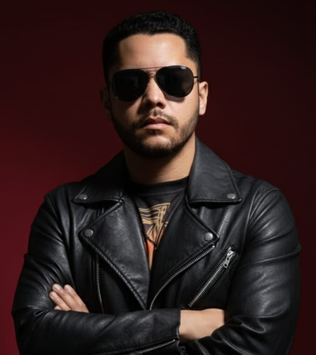
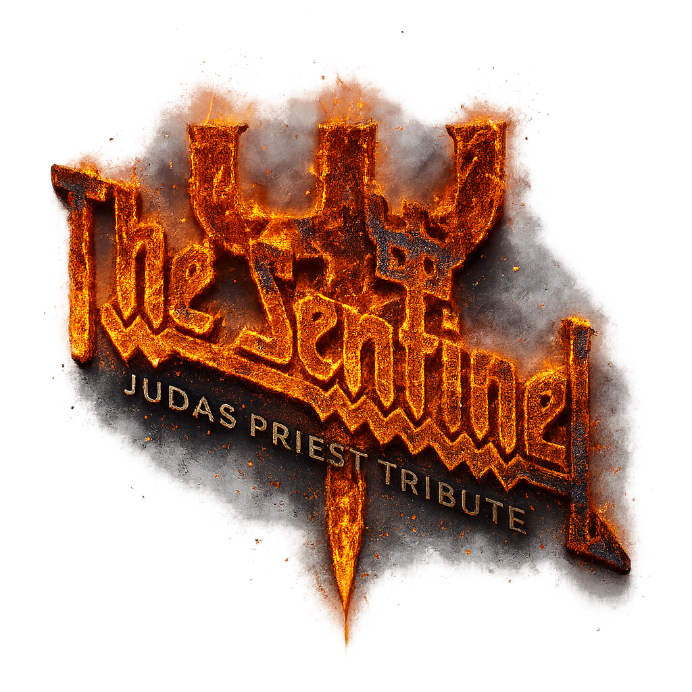
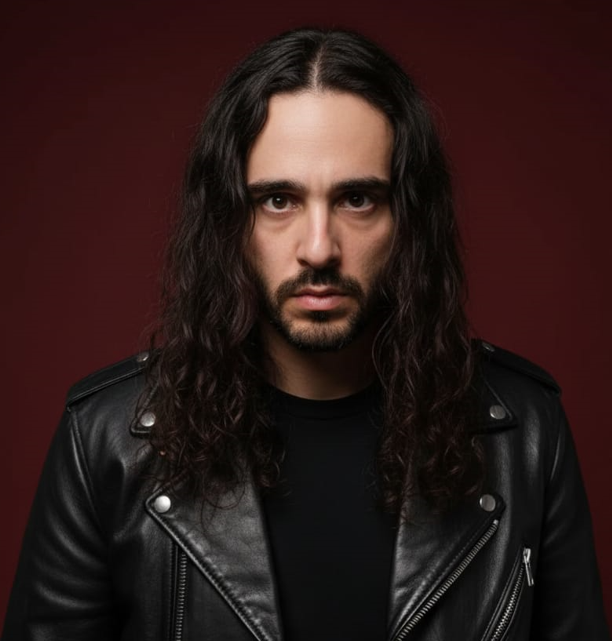
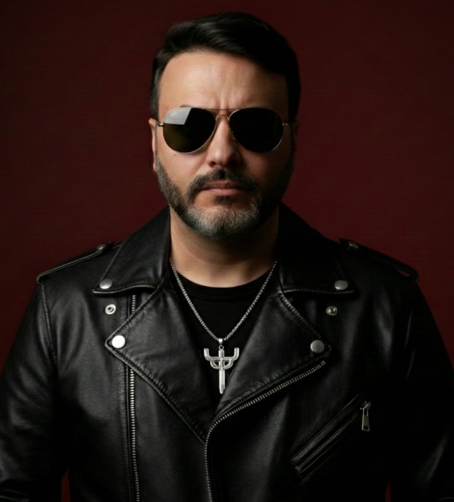
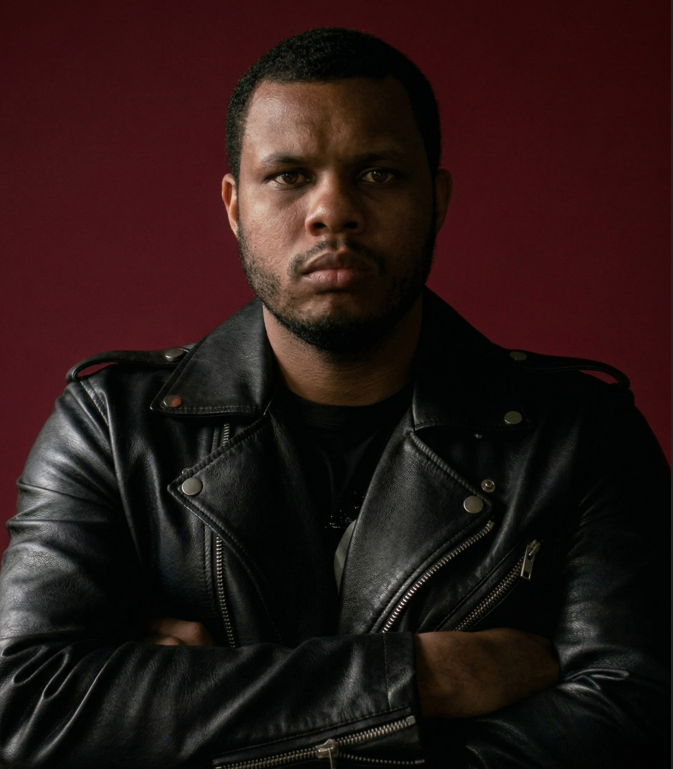
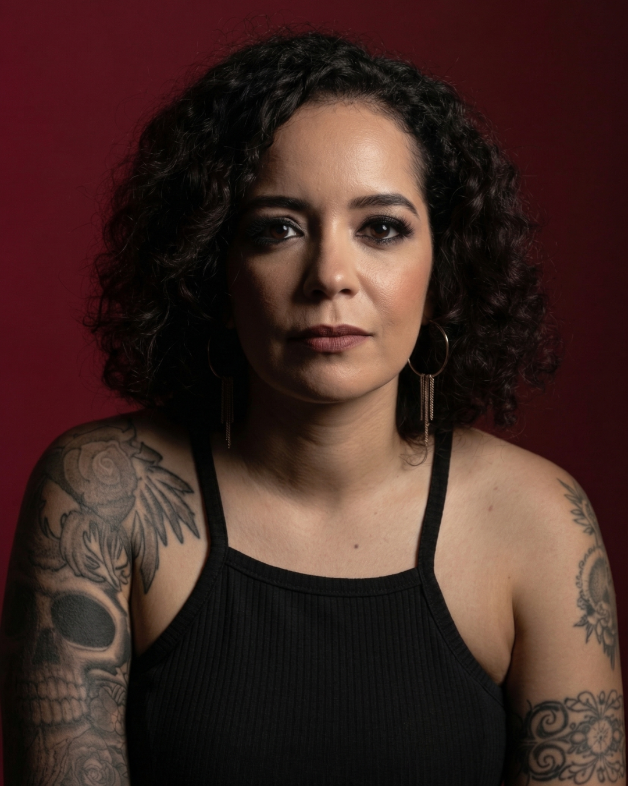

Elton Magno
Guitarra

Judas Priest Tribute
A The Sentinel nasceu em Uberlândia-MG em 2022 com a missão de prestar um tributo definitivo aos Deuses do Metal, o lendário Judas Priest.
The Sentinel was founded in Uberlândia-MG in 2022 with the mission of delivering the definitive tribute to the Gods of Metal, the legendary Judas Priest.
Preparem-se para o Ataque Britânico!
As cinco forças que levam o legado do Judas Priest ao palco.

Guitarra

Guitarra

Vocal

Baixo

Bateria
Get ready for the British Assault!
Leve a força do Judas Priest para o seu evento. Fale com a The Sentinel e prepare-se para o ataque britânico.